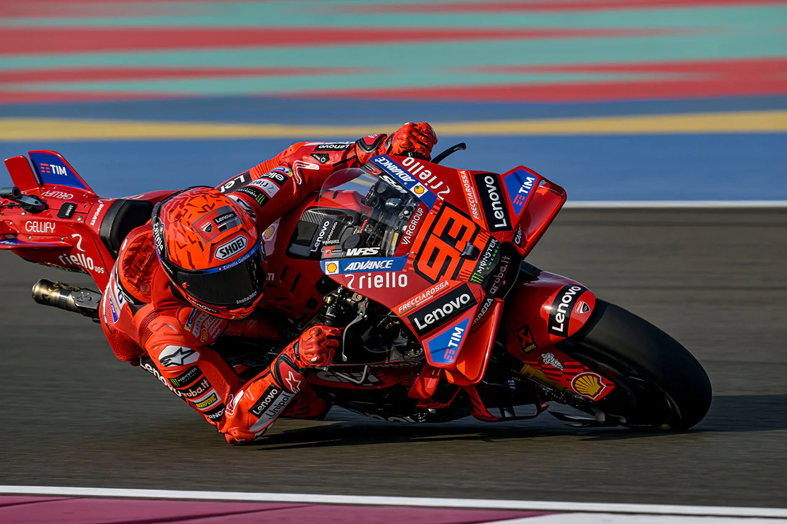
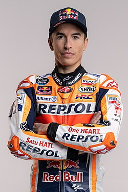

Mark Markez
 
Marc Márquez Alentà (rođen 17. februara 1993.) je motociklistički trkač koji se takmiči na Velikoj nagradi Španije za Ducati Lenovo tim. Smatra se jednim od najvećih motociklističkih trkača svih vremena, a prethodno se takmičio za Ducatijev satelitski tim Gresini 2024. godine i za Hondin fabrički tim od svog MotoGP debija 2013. do 2023. godine.
Rođen je u Cerveri, Katalonija, Španija, i širom svijeta nosi nadimak "Mrav Cervere" (zbog svoje visine od 1,70 m), a u svom rodnom gradu "el tro de Cervera", što znači "Grom Cervere". Jedan je od četiri vozača koji su osvojili titule svjetskog prvaka u tri različite kategorije, nakon Mikea Hailwooda, Phila Reada i Valentina Rossija, te je jedan od najuspješnijih motociklističkih trkača svih vremena, sa osam svjetskih prvenstava na Velikoj nagradi, od kojih je šest u premijer klasi.
Márquez je postao treći Španac, nakon Àlexa Crivilléa i Jorgea Lorenza, koji je osvojio titulu u premijer klasi, i najuspješniji je španski vozač u MotoGP-u do sada sa 69 pobjeda, a posljednja je bila Velika nagrada Njemačke 2025. godine. Godine 2013. postao je prvi vozač od Kennyja Robertsa 1978. koji je osvojio titulu u premijer klasi u svojoj debitantskoj sezoni, i najmlađi koji je osvojio titulu ukupno, sa 20 godina i 266 dana.[1]
"I like to work hard to achieve my goals. There's no reward without work."
| MotoGP World Championship | |
|---|---|
| Bike number | 93 |
| Manufactures | Honda,Ducati |
| Championship | 7 times |
| Starts | Wins | Podiums | Poles | F.laps | Points |
|---|---|---|---|---|---|
| 200 | 69 | 120 | 73 | 69 | 3362 |